핵심 요약
이 논문은 patch-based monocular SLAM의 online 최적화와 feed-forward reconstruction model의 dense depth / moving-object prior를 결합해, 동적 장면에서 pose와 scale-consistent depth를 함께 안정화하는 시스템을 제안한다.
핵심은 π3mos가 제공하는 moving mask와 depth prior를 DPV-SLAM식 sliding-window BA에 넣되, scale alignment와 uncertainty-aware weighting으로 feed-forward model의 batch scale ambiguity를 보정하는 것이다.
π³mos
feed-forward reconstruction model에 MOS head를 추가해 moving object mask, depth, confidence, camera pose를 함께 예측.
Hybrid SLAM
dense prior를 그대로 믿지 않고 patch-based BA의 geometric constraint와 결합.
Scale Alignment
batch-wise feed-forward inference에서 생기는 scale ambiguity를 historical keyframe patch depth로 정렬.
Uncertainty-aware BA
depth prior가 필요한 frame에서는 강하게, BA만으로 충분한 frame에서는 약하게 작동하도록 weight 조절.
이 논문은 dynamic SLAM을 masking 문제로만 보지 않는다. feed-forward model이 잘하는 dense prior와 SLAM이 잘하는 incremental optimization을 서로 보정하게 만드는 구조가 핵심이다.
온라인 최적화가 강함
sliding-window BA와 patch tracking으로 pose를 안정적으로 갱신하지만, 동적 객체와 monocular scale/depth uncertainty에 취약.
dense geometry prior가 강함
multi-view 학습 prior로 depth와 mask를 잘 예측하지만, batch-wise 사용 시 scale consistency와 online drift가 문제.
상호 보정 구조
mask/depth prior가 BA를 돕고, BA의 patch scale이 feed-forward depth를 다시 맞춤.
논문 상세 정리
아래부터는 기존 논문 내용을 최대한 담은 상세 해석이다. 핵심 흐름에서 벗어나는 배경지식, notation, 부가 자료는 접어두었다.
Problem: dynamic SLAM에 왜 general 3D prior가 필요한가
초록의 핵심은 동적 장면에서 camera pose와 3D reconstruction이 흔들리는 이유를 moving object와 monocular depth/scale uncertainty로 보고, 이를 patch-based BA와 feed-forward reconstruction prior의 결합으로 해결하겠다는 것이다.
두 계열의 장점을 단순히 나란히 붙이는 것이 아니라, BA와 learned prior가 서로 보완하도록 설계한다.
| 문제 | 사용한 prior | SLAM에서의 역할 |
|---|---|---|
| Moving object | π3mos의 motion probability | static patch만 골라 잘못된 correspondence 축소 |
| Monocular scale | dense depth prediction | historical patch depth와 scale 정렬 |
| Depth uncertainty | patch depth covariance | depth prior loss weight를 frame별로 조절 |
Context: dynamic object와 monocular ambiguity가 왜 어려운가
Introduction은 기존 VO/SLAM이 정적 환경 가정에 묶여 있고, moving object가 data association과 map quality를 무너뜨린다는 문제에서 출발한다. 반대로 feed-forward reconstruction model은 dense geometry prior가 강하지만, online long sequence에서는 memory, latency, drift, scale consistency 문제가 남는다.
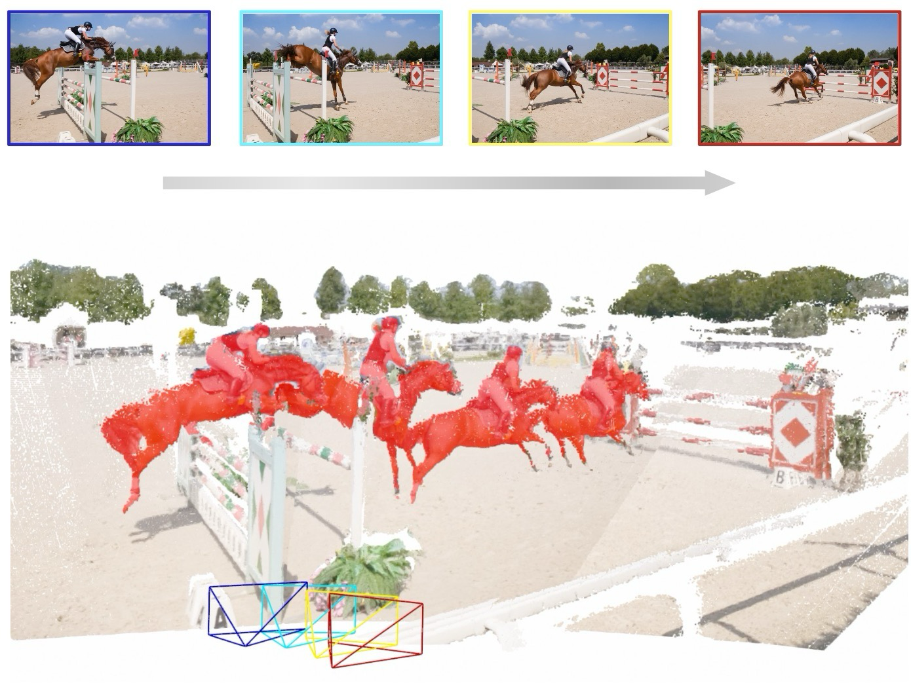
논문은 “SLAM은 online이 강하고, feed-forward model은 prior가 강하다”는 대비를 만든 뒤 둘을 결합한다.
| 축 | 한계 | 논문의 연결 방식 |
|---|---|---|
| Classical SLAM | static assumption, sparse reconstruction, monocular depth ambiguity | BA backbone으로 online consistency 유지 |
| Feed-forward model | batch inference, scale ambiguity, long sequence drift | moving mask와 depth prior만 SLAM에 주입 |
| Hybrid result | 각각 혼자서는 dynamic long sequence가 어려움 | mask, scale, uncertainty를 BA 안에서 조절 |
Gap: SLAM과 feed-forward 3D prior 사이에 무엇이 비어 있나
Related Work는 두 흐름을 대비한다. 하나는 moving object를 explicit하게 제거하려는 dynamic SLAM 계열이고, 다른 하나는 dense geometry를 바로 예측하는 feed-forward reconstruction 계열이다.
Related Work 흐름 보기
세부 문헌명보다 각 계열이 왜 이 논문의 필요성을 만드는지 보는 것이 중요하다.
DynaSLAM처럼 known dynamic class나 segmentation network에 의존.
multi-frame point trajectory로 static/dynamic을 구분하지만 offline mask나 긴 관측에 의존.
VGGT, π3처럼 dense structure와 pose를 빠르게 예측하지만 online 적용에 제약.
CUT3R류는 memory를 쓰지만 long sequence drift가 남음.
논문의 문제의식은 dynamic mask와 feed-forward prior가 각각 강하지만, 단독으로는 online SLAM의 안정성을 보장하기 어렵다는 데 있다.
| 흐름 | 강점 | 남는 빈틈 |
|---|---|---|
| Mask / detector SLAM | 움직일 가능성이 큰 영역을 명확히 제거 | unknown dynamic, segmentation failure, static-but-movable object에 취약 |
| Trajectory dynamics | multi-frame consistency로 실제 움직임을 판단 | 긴 window나 offline processing이 필요한 경우가 많음 |
| Feed-forward 3D prior | depth, pose, dense geometry를 빠르게 제공 | scale, temporal consistency, backend integration이 별도 필요 |
| 이 논문 | prior를 SLAM 내부의 초기값/weight/constraint로 사용 | 학습된 3D prior를 optimization 흐름으로 흡수 |
Mechanism: 3D prior를 SLAM objective에 어떻게 넣나
Approach는 DPV-SLAM을 기반으로 하되, π3mos가 예측한 motion probability, dense depth, confidence를 sliding-window BA에 넣는 방식으로 구성된다. 목적은 pose Ti ∈ SE(3)와 scale-consistent depth map Di를 online으로 추정하는 것이다.
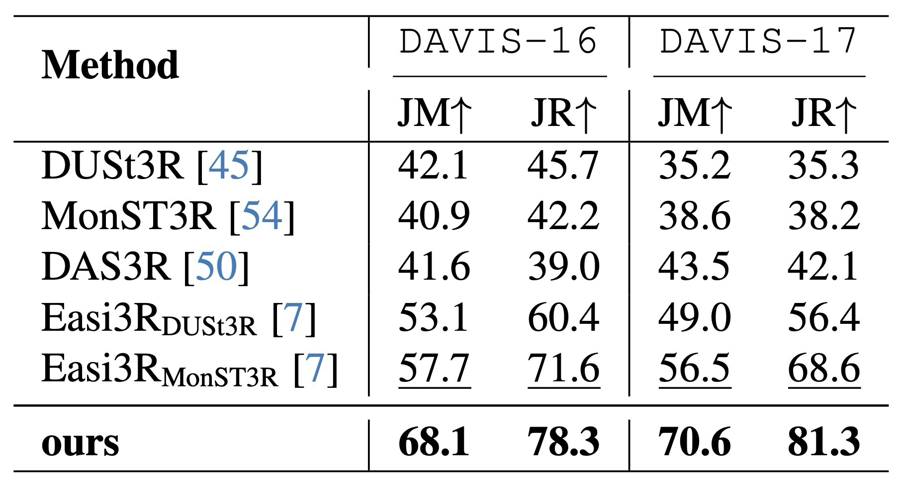
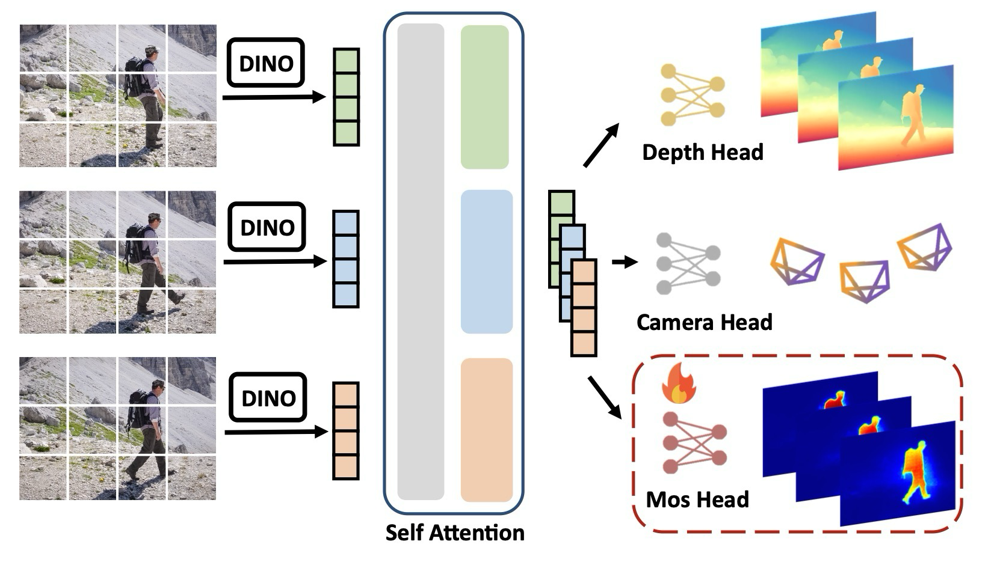
각 모듈은 독립적인 성능 향상 장치가 아니라, 다음 단계의 실패 모드를 줄이기 위해 배치된다.
| 구성 | 담당 | 왜 필요한가 |
|---|---|---|
| DPV-SLAM | patch tracking + sliding-window BA | online pose/depth consistency 유지 |
| π³mos | motion probability, dense depth, confidence 예측 | 동적 영역 제거와 depth prior 제공 |
| Static patch sampling | Mi < sd 영역에서 patch 선택 | moving object correspondence가 BA에 들어가는 것을 방지 |
| Scale alignment | historical keyframe patch와 predicted depth scale 정렬 | batch-wise prior의 scale ambiguity 보정 |
| Uncertainty-aware BA | depth prior loss의 frame weight 조절 | prior가 도움 될 때만 강하게 사용 |
Mechanism: 핵심 objective와 update는 무엇인가
수식은 DPV-SLAM의 reprojection BA, π3mos prediction, scale alignment, uncertainty-aware depth prior로 나눠 읽으면 된다. 핵심 block 수식은 아래처럼 역할 중심으로 먼저 정리하고, 누락되기 쉬운 보조 수식은 이어지는 보조 수식 정리에서 번호별 역할을 확인할 수 있게 했다.
Evidence: which dynamic scenes test it?
The experiments cover moving object segmentation, camera tracking, video depth estimation, and ablations. The central message is that the mask improves dynamic filtering, while scale-aligned depth priors and uncertainty-aware BA improve tracking and depth consistency.
Each table tests a different claim: Table 3 for masks, Tables 1/2/4 for tracking, Table 5 for depth, and Table 6 for component contributions.
π3mos achieves the best JM/JR against baselines.
Improves dynamic indoor tracking over RGB-D and monocular baselines.
Handles large depth variation, fast motion, and blur better than WildGS-SLAM.
Best online Abs Rel and close to offline π3 on Bonn.
Moving mask is the largest axis; depth prior and uncertainty-aware BA add further gains.
Multi-frame inference limits the system to about 2 fps on RTX5000.
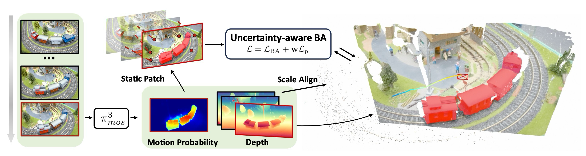
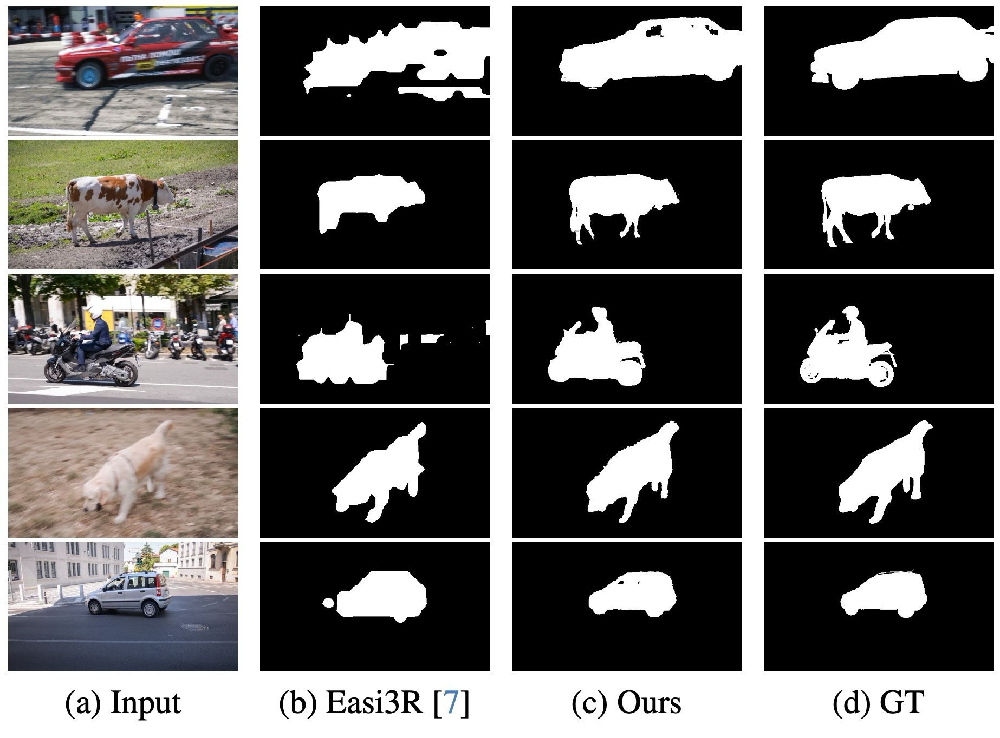
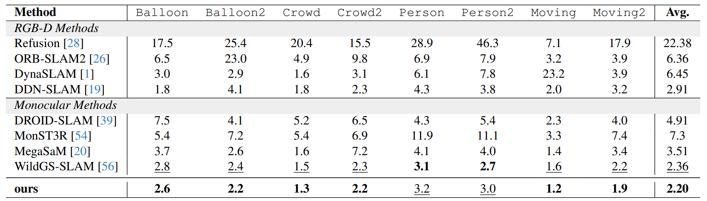
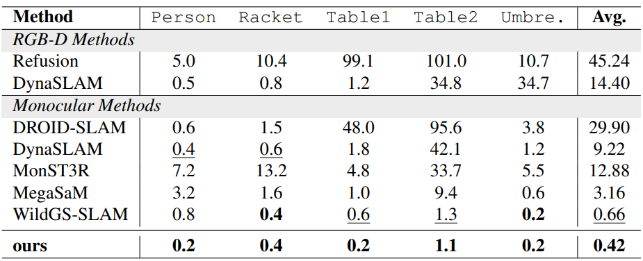
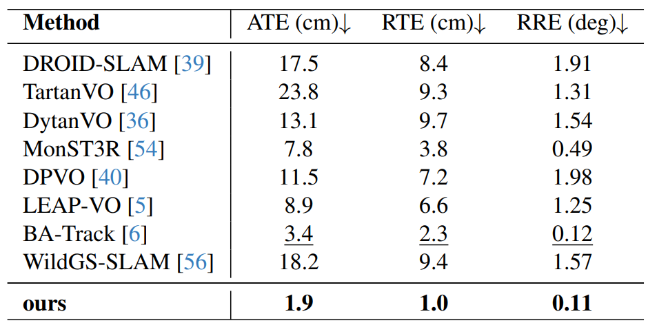
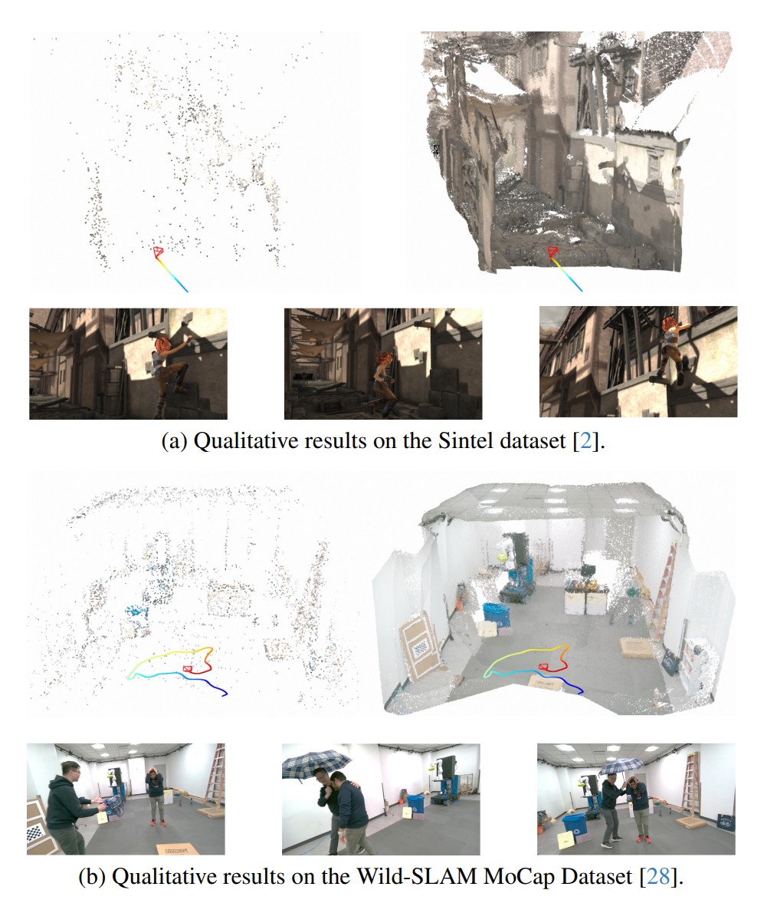
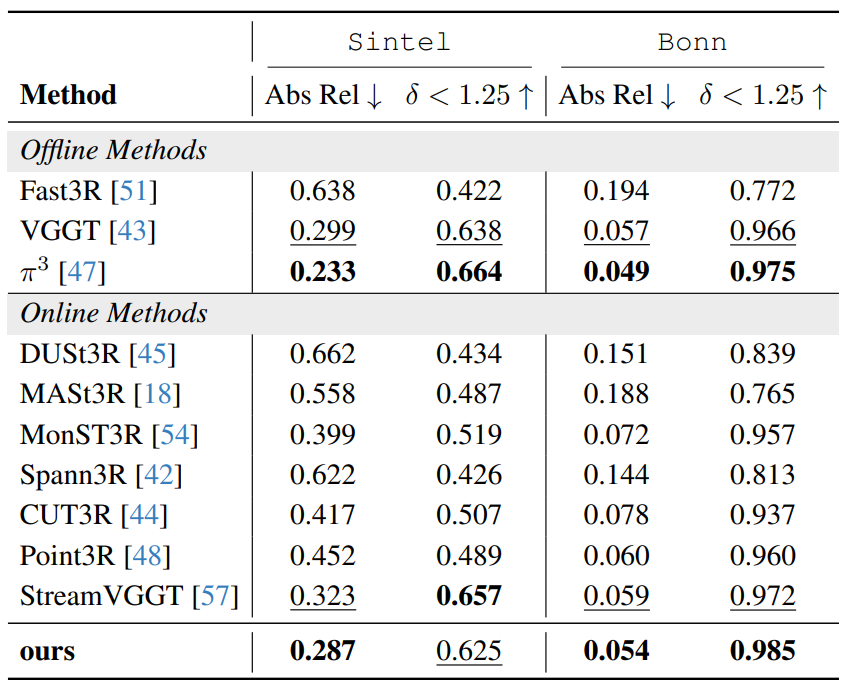
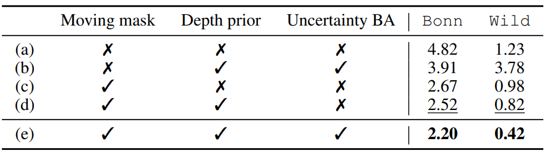
Usage / Limits: when prior-based dynamic SLAM is useful
The paper proposes a dynamic monocular visual SLAM system that brings a feed-forward 3D prior into SLAM optimization as moving masks, depth predictions, and uncertainty-aware depth priors. π3mos predicts motion probabilities and depths, then scale alignment and adaptive weighting stabilize online pose/depth estimation.
Takeaway
(In progress...)
Comments